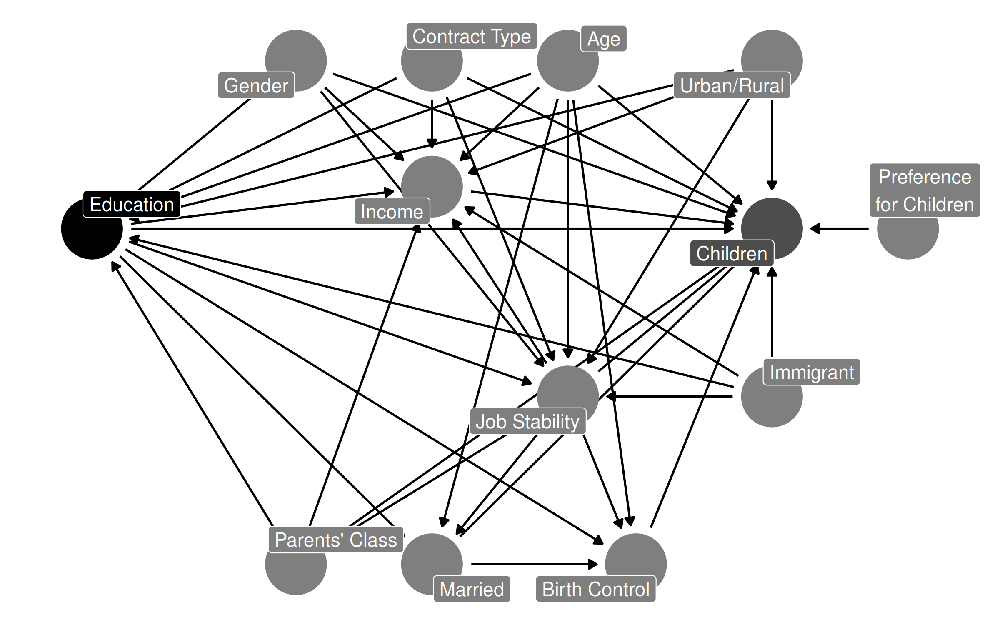
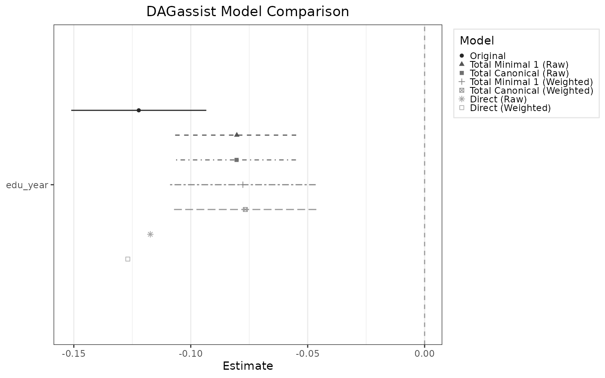

Using DAGassist for Diagnosis and Re-estimation
Graham Goff and Mike Denly
2026-02-27
Source:vignettes/DAGassist.Rmd
DAGassist.RmdIntroduction
DAGassist contains tools for using directed acyclic graphs (DAGs) to align regressions with an estimand and its identifying assumptions. DAGs are causal graphs that nonparametrically encode the relationships between a model’s variables. For good introductory articles on DAGs, see Pearl (1995), Pearl (2009), Hünermund, Louw, and Rönkkö (2025), and Elwert (2013).
The DAGassist workflow has five steps: (1) declare an estimand; (2) draw a DAG; (3) classify control variables by role; (4) estimate models using DAG-consistent adjustment sets; and (5) recover the interpretable estimand. This guide provides an applied introduction to the DAGassist workflow.
Step 1: Declare an Estimand
Step 1’s focus on declaring the estimands ensures that studies maintain a consistent quantity of interest for evaluation Lundberg, Johnson, and Stewart (2021); Findley, Kikuta, and Denly (2021). Of course, some estimands may be more policy-relevant than others Deaton (2010).
For the purpose of this guide, we are interested in the sample average treatment effect (SATE).
Step 2: Draw a DAG
DAGs have three basic building blocks: variables, arrows, and missing arrows. In DAG terminology, variables capture nodes or vertices, whereas edges or arcs refer to arrows Tennant et al. (2021). Missing arrows are equivalent to a strong null hypothesis.
Dataset summary statistics (click to expand)
| variable | type | Min | Q1 | Median | Mean | Q3 | Max |
|---|---|---|---|---|---|---|---|
| id | integer | 1.00 | 250.75 | 500.50 | 500.50 | 750.25 | 1000.00 |
| year | integer | 0.00 | 1.00 | 2.00 | 2.00 | 3.00 | 4.00 |
| age | numeric | 0.00 | 27.60 | 37.70 | 37.76 | 47.40 | 86.20 |
| pref | numeric | 0.00 | 1.35 | 2.03 | 2.06 | 2.74 | 4.94 |
| edu_year | numeric | 0.00 | 11.80 | 13.10 | 13.07 | 15.20 | 22.00 |
| married | integer | 0.00 | 0.00 | 1.00 | 0.56 | 1.00 | 1.00 |
| birth_control | integer | 0.00 | 0.00 | 1.00 | 0.71 | 1.00 | 1.00 |
| income | numeric | 2344.00 | 43141.75 | 87560.50 | 125387.86 | 162098.50 | 1817478.00 |
| children | numeric | 0.00 | 0.00 | 0.00 | 2.03 | 3.00 | 12.00 |
| job_stability_t | numeric | -3.00 | -0.27 | 0.55 | 0.49 | 1.29 | 3.00 |
| variable | type | top_levels |
|---|---|---|
| gender | factor | Male:2565 Female:2435 |
| immigrant | factor | No:4380 Yes:620 |
| urban | factor | Urban:3560 Rural:1440 |
| class | ordered | Working:2080 Middle:1580 Low:885 (Other):455 |
| religion | factor | Christian:2005 Unaffiliated:1725 Muslim:460 (Other):810 |
| contract | factor | Temporary:1905 Permanent:1810 Informal:1285 |
| edu_degree | factor | HS_grad:1610 Some_college:1390 BA:975 (Other):1025 |

Example: The Causal Effects of Family Background and Life Course Events on Fertility Patterns
For the purpose of this guide, we visualize a common social science question: how does education affect fertility Morgan and Winship (2015)? The DAG model encodes a plausible, but not exhaustive, set of covariates.
Step 3: Classify Control Variables by Role
DAGassist(dag_model,
show="roles")## DAGassist Report:
##
## Roles:
## variable role Exp. Out. conf med col dOut dMed dCol dConfOn dConfOff NCT NCO
## edu_year exposure x
## children outcome x
## age confounder x
## class confounder x
## contract confounder x
## gender confounder x
## immigrant confounder x
## urban confounder x
## birth_control mediator x x
## income mediator x x
## job_stability_t mediator x
## married mediator x x
## pref nco x
## religion nco x
##
## Roles legend: Exp. = exposure/treatment; Out. = outcome; CON = confounder; MED = mediator; COL = collider; dOut = descendant of outcome; dMed = descendant of mediator; dCol = descendant of collider; dConfOn = descendant of a confounder on a back-door path; dConfOff = descendant of a confounder off a back-door path; NCT = neutral control on treatment; NCO = neutral control on outcomeInterpreting the roles table:
-
ROLES:
DAGassistclassifies the variables in your formula by causal role, based on the relationships in your DAG. It classifies according to these categories.-
X is the
treatment/independent variable/exposure. -
Y is the
outcome/dependent variable. -
conf stands for
confounder, a common cause of X and Y. Confounders create a spurious association between X and Y, and must be adjusted for. -
med stands for
mediator, a variable that lies on a path from X to Y, which transmit some of the effect from X to Y. One should not adjust for mediators if one wants to estimate the total effect of X on Y. -
col stands for
collider, a direct common descendant of X and Y. Colliders already block paths, so adjusting for it opens a spurious association between X and Y. -
dOut stands for
descendant of the outcome, a descendant of Y, which introduces bias if adjusted for. -
dMed stands for
descendant of a mediator, which should not be adjusted for when estimating total effect. -
dCol stands for
descendant of a collider. Adjusting for a descendant of a collider opens a spurious association between X and Y. -
dConfOn stands for
descendant of a confounder on a back door path, a descendant of Z that affects Y. -
dConfOff stands for
descendant of a confounder off a backdoor path, a decendant of Z that does not affect Y. - other is a catch-all category that for variables that do not fit any of the previous definitions.
-
X is the
4. Estimate Models Using DAG-Consistent Adjustment Sets
DAGassist(dag_model,
formula = lm(children ~ edu_year + age + class + gender +
immigrant + urban + birth_control + income +
married + job_stability_t + contract + pref, data = dat))## DAGassist Report:
##
## Roles:
## variable role Exp. Out. conf med col dOut dMed dCol dConfOn dConfOff NCT NCO
## edu_year exposure x
## children outcome x
## age confounder x
## class confounder x
## contract confounder x
## gender confounder x
## immigrant confounder x
## urban confounder x
## birth_control mediator x x
## income mediator x x
## job_stability_t mediator x
## married mediator x x
## pref nco x
##
## (!) Bad controls in your formula: {birth_control, income, married, job_stability_t}
## Minimal controls 1: {age, class, contract, gender, immigrant, urban}
## Canonical controls: {age, class, contract, gender, immigrant, pref, urban}
##
## Formulas:
## original: children ~ edu_year + age + class + gender + immigrant + urban + birth_control + income + married + job_stability_t + contract + pref
##
## Model comparison:
##
## +-------------------+-----------+-----------+-----------+
## | | Original | Minimal 1 | Canonical |
## +===================+===========+===========+===========+
## | edu_year | -0.122*** | -0.080*** | -0.080*** |
## +-------------------+-----------+-----------+-----------+
## | | (0.015) | (0.013) | (0.013) |
## +-------------------+-----------+-----------+-----------+
## | age | 0.070*** | 0.095*** | 0.096*** |
## +-------------------+-----------+-----------+-----------+
## | | (0.004) | (0.003) | (0.003) |
## +-------------------+-----------+-----------+-----------+
## | genderMale | 0.181* | 0.179* | 0.190* |
## +-------------------+-----------+-----------+-----------+
## | | (0.085) | (0.087) | (0.085) |
## +-------------------+-----------+-----------+-----------+
## | immigrantYes | -0.246+ | -0.172 | -0.243+ |
## +-------------------+-----------+-----------+-----------+
## | | (0.128) | (0.131) | (0.129) |
## +-------------------+-----------+-----------+-----------+
## | urbanUrban | 0.121 | 0.238* | 0.175+ |
## +-------------------+-----------+-----------+-----------+
## | | (0.094) | (0.096) | (0.094) |
## +-------------------+-----------+-----------+-----------+
## | birth_control | 0.133 | | |
## +-------------------+-----------+-----------+-----------+
## | | (0.103) | | |
## +-------------------+-----------+-----------+-----------+
## | income | 0.000 | | |
## +-------------------+-----------+-----------+-----------+
## | | (0.000) | | |
## +-------------------+-----------+-----------+-----------+
## | married | 0.703*** | | |
## +-------------------+-----------+-----------+-----------+
## | | (0.122) | | |
## +-------------------+-----------+-----------+-----------+
## | job_stability_t | 0.285*** | | |
## +-------------------+-----------+-----------+-----------+
## | | (0.047) | | |
## +-------------------+-----------+-----------+-----------+
## | contractTemporary | 0.710*** | 0.772*** | 0.804*** |
## +-------------------+-----------+-----------+-----------+
## | | (0.110) | (0.112) | (0.110) |
## +-------------------+-----------+-----------+-----------+
## | contractPermanent | 0.893*** | 1.116*** | 1.093*** |
## +-------------------+-----------+-----------+-----------+
## | | (0.114) | (0.113) | (0.111) |
## +-------------------+-----------+-----------+-----------+
## | pref | 0.581*** | | 0.578*** |
## +-------------------+-----------+-----------+-----------+
## | | (0.042) | | (0.042) |
## +-------------------+-----------+-----------+-----------+
## | Num.Obs. | 5000 | 5000 | 5000 |
## +-------------------+-----------+-----------+-----------+
## | R2 | 0.227 | 0.183 | 0.213 |
## +===================+===========+===========+===========+
## | + p < 0.1, * p < 0.05, ** p < 0.01, *** p < 0.001 |
## +===================+===========+===========+===========+
##
## Roles legend: Exp. = exposure; Out. = outcome; CON = confounder; MED = mediator; COL = collider; dOut = descendant of outcome; dMed = descendant of mediator; dCol = descendant of collider; dConfOn = descendant of a confounder on a back-door path; dConfOff = descendant of a confounder off a back-door path; NCT = neutral control on treatment; NCO = neutral control on outcomeInterpreting the model comparison table:
-
MODEL COMPARISON:
-
Minimalis the smallest adjustment set necessary to close all back-door paths from the independent to the dependent variable. The minimal set only includesconfoundersas controls. -
Canonicalis the largest permissible adjustment set. Essentially, thecanonicalset contains all control variables that are notconfounders,mediators,intermediate outcomes,descendants of mediatiors, ordescendants of colliders.
-
The table below illustrates the varible roles permitted by each set.
| Path / Node Type | Minimal | Canonical |
|---|---|---|
| Fork/Common–Cause Confounder (Z) | ✓ | ✓ |
| Chain/Mediator (M) | ✗ | ✗ |
| Collider (C) | ✗ | ✗ |
| Descendant of Mediator (N) | ✗ | ✗ |
| Descendant of Collider (Q) | ✗ | ✗ |
| Descendant of Outcome (I) | ✗ | ✗ |
| M-Bias | ✗ | ✗ |
| Butterfly Bias | ✗ | ✗ |
| Neutral Control on Treatment (E → X) | ✗ | ✓ |
| Neutral Control on Outcome (F → Y) | ✗ | ✓ |
| Descendant of Confounder off Backdoor Path (W) | ✗ | ✗ |
| Descendant of Confounder on Backdoor Path (V) | Z or V | Z and V |
Note: ✓ = adjust; ✗ = do not adjust. There may be multiple minimal sets; the canonical set is unique.
5. Recover the Interpretable Estimand
DAGassist(dag_model,
formula = lm(children ~ edu_year + age + class + gender +
immigrant + urban + birth_control + income +
married + job_stability_t + contract + pref, data = dat),
estimand = "SATE")## DAGassist Report:
##
## Roles:
## variable role Exp. Out. conf med col dOut dMed dCol dConfOn dConfOff NCT NCO
## edu_year exposure x
## children outcome x
## age confounder x
## class confounder x
## contract confounder x
## gender confounder x
## immigrant confounder x
## urban confounder x
## birth_control mediator x x
## income mediator x x
## job_stability_t mediator x
## married mediator x x
## pref nco x
##
## (!) Bad controls in your formula: {birth_control, income, married, job_stability_t}
## Minimal controls 1: {age, class, contract, gender, immigrant, urban}
## Canonical controls: {age, class, contract, gender, immigrant, pref, urban}
##
## Formulas:
## original: children ~ edu_year + age + class + gender + immigrant + urban + birth_control + income + married + job_stability_t + contract + pref
##
## Model comparison:
##
## +-------------------+-----------+-----------+------------------+-----------+------------------+
## | | Original | Minimal 1 | Minimal 1 (SATE) | Canonical | Canonical (SATE) |
## +===================+===========+===========+==================+===========+==================+
## | edu_year | -0.122*** | -0.080*** | -0.077*** | -0.080*** | -0.077*** |
## +-------------------+-----------+-----------+------------------+-----------+------------------+
## | | (0.015) | (0.013) | (0.016) | (0.013) | (0.015) |
## +-------------------+-----------+-----------+------------------+-----------+------------------+
## | age | 0.070*** | 0.095*** | | 0.096*** | |
## +-------------------+-----------+-----------+------------------+-----------+------------------+
## | | (0.004) | (0.003) | | (0.003) | |
## +-------------------+-----------+-----------+------------------+-----------+------------------+
## | genderMale | 0.181* | 0.179* | | 0.190* | |
## +-------------------+-----------+-----------+------------------+-----------+------------------+
## | | (0.085) | (0.087) | | (0.085) | |
## +-------------------+-----------+-----------+------------------+-----------+------------------+
## | immigrantYes | -0.246+ | -0.172 | | -0.243+ | |
## +-------------------+-----------+-----------+------------------+-----------+------------------+
## | | (0.128) | (0.131) | | (0.129) | |
## +-------------------+-----------+-----------+------------------+-----------+------------------+
## | urbanUrban | 0.121 | 0.238* | | 0.175+ | |
## +-------------------+-----------+-----------+------------------+-----------+------------------+
## | | (0.094) | (0.096) | | (0.094) | |
## +-------------------+-----------+-----------+------------------+-----------+------------------+
## | birth_control | 0.133 | | | | |
## +-------------------+-----------+-----------+------------------+-----------+------------------+
## | | (0.103) | | | | |
## +-------------------+-----------+-----------+------------------+-----------+------------------+
## | income | 0.000 | | | | |
## +-------------------+-----------+-----------+------------------+-----------+------------------+
## | | (0.000) | | | | |
## +-------------------+-----------+-----------+------------------+-----------+------------------+
## | married | 0.703*** | | | | |
## +-------------------+-----------+-----------+------------------+-----------+------------------+
## | | (0.122) | | | | |
## +-------------------+-----------+-----------+------------------+-----------+------------------+
## | job_stability_t | 0.285*** | | | | |
## +-------------------+-----------+-----------+------------------+-----------+------------------+
## | | (0.047) | | | | |
## +-------------------+-----------+-----------+------------------+-----------+------------------+
## | contractTemporary | 0.710*** | 0.772*** | | 0.804*** | |
## +-------------------+-----------+-----------+------------------+-----------+------------------+
## | | (0.110) | (0.112) | | (0.110) | |
## +-------------------+-----------+-----------+------------------+-----------+------------------+
## | contractPermanent | 0.893*** | 1.116*** | | 1.093*** | |
## +-------------------+-----------+-----------+------------------+-----------+------------------+
## | | (0.114) | (0.113) | | (0.111) | |
## +-------------------+-----------+-----------+------------------+-----------+------------------+
## | pref | 0.581*** | | | 0.578*** | |
## +-------------------+-----------+-----------+------------------+-----------+------------------+
## | | (0.042) | | | (0.042) | |
## +-------------------+-----------+-----------+------------------+-----------+------------------+
## | Num.Obs. | 5000 | 5000 | 5000 | 5000 | 5000 |
## +-------------------+-----------+-----------+------------------+-----------+------------------+
## | R2 | 0.227 | 0.183 | 0.172 | 0.213 | 0.206 |
## +===================+===========+===========+==================+===========+==================+
## | + p < 0.1, * p < 0.05, ** p < 0.01, *** p < 0.001 |
## +===================+===========+===========+==================+===========+==================+
##
## Weight diagnostics:
## legend: w range reports the min-max weights by group; ESS is kish effective sample size.
## Minimal 1 (SATE): w range=0.04726..4.878 | ESS (weighted)=4368.24
## Canonical (SATE): w range=0.04731..4.877 | ESS (weighted)=4368.17
##
## Roles legend: Exp. = exposure; Out. = outcome; CON = confounder; MED = mediator; COL = collider; dOut = descendant of outcome; dMed = descendant of mediator; dCol = descendant of collider; dConfOn = descendant of a confounder on a back-door path; dConfOff = descendant of a confounder off a back-door path; NCT = neutral control on treatment; NCO = neutral control on outcomeIn some cases, the target estimand is the average controlled direct
effect. DAGassist supports recovering the controlled direct
effect using sequential g-estimation via integration with the
DirectEffects R package.
Using the prior example, we can use DAGassist to
estimate the effect of years of education on a person’s number of
children, except through birth control, income, and marital status.
library(DirectEffects)
DAGassist(dag_model,
formula = lm(children ~ edu_year + age + class + gender +
immigrant + urban + birth_control + income +
married + job_stability_t + contract + pref, data = dat),
estimand = c("SATE", "SACDE"),
type = "dotwhisker")
Visualizing all estimands
Export Publication-Grade Reports
In order to export DAGassist reports as files, users
must first install a few commonly-used packages. Dependencies vary by
export file type.
-
modelsummaryto build the model comparison table for LaTeX, Word, Excel, and plaintext.- LaTeX uses
broomas a fallback for report generation
- LaTeX uses
-
knitrto build intermediate .md for Word and plaintext report generation. -
rmarkdownto convert .md files to .docx files for Word report generation. -
writexlto export Excel files.
Essentially, to export:
-
LaTeX only needs
modelsummary -
Excel needs
modelsummaryandwritexl -
plaintext needs
modelsummaryandknitr -
Word needs
modelsummary,knitr, andrmarkdown
Users can generate latex reports in the console (default), or to an
output file via the out = parameter:
DAGassist(dag_model,
formula = lm(children ~ edu_year + age + class + gender +
immigrant + urban + birth_control + income +
married + job_stability_t + contract + pref, data = dat),
type = "latex",
out = "out/path/filename.tex")Word and Excel output requires an
out = parameter:
#word example
DAGassist(dag_model,
formula = lm(children ~ edu_year + age + class + gender +
immigrant + urban + birth_control + income +
married + job_stability_t + contract + pref, data = dat),
type = "word", #or, type = "docx"
out = "out/path/filename.docx")
#excel example
DAGassist(dag_model,
formula = lm(children ~ edu_year + age + class + gender +
immigrant + urban + birth_control + income +
married + job_stability_t + contract + pref, data = dat),
type = "excel", #or, type = "xlsx"
out = "out/path/filename.xlsx")